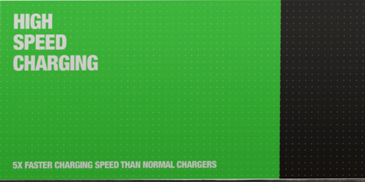
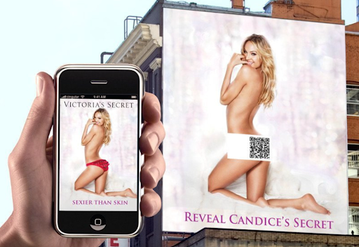
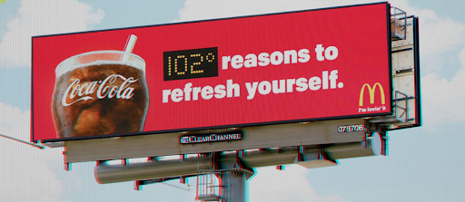
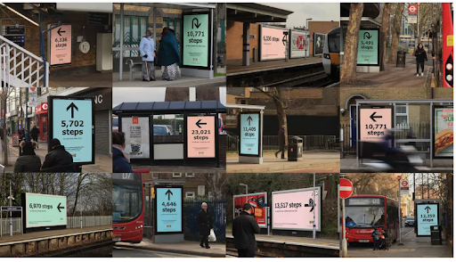

BEST MARKETING IDEAS IN OOH CAMPAIGN- 2022
Average time span for human attention is just 8 seconds. If your Out of Home (OOH) media is unable to engage consumers within this time frame, then your marketing idea is nothing but just a resource burning tool. Here are top emerging ideas in 2022 to save you from wasting your resources.
-
Product functionality based billboards-
Expressing your product functionalities directly through billboard without cluttering with text and images is still a brilliant idea.
-
Curiosity feeder billboards-
Even though Victoria’s Secret billboard objectifies women, you can’t question the curiosity it cultivated.
-
Information based billboards-
If you can engage the audience through useful information along with marketing, there is nothing better than this.
-
3-D Billboards-

More attracting and impressive (by visualisation) billboards are very usefull for marketing.
-
Activity based billboards-
Lifestyle has become sedentary and it's very important to keep yourself active for a healthy life. What if your marketing promotes it alongwith its core idea?
Liked it?
Reach out to us on contact@admavin.com for more such ideas. What do we do? AdMAVIN specializes in geo spatial intelligence and we provide audience measurement tools which you can use to impress brands.